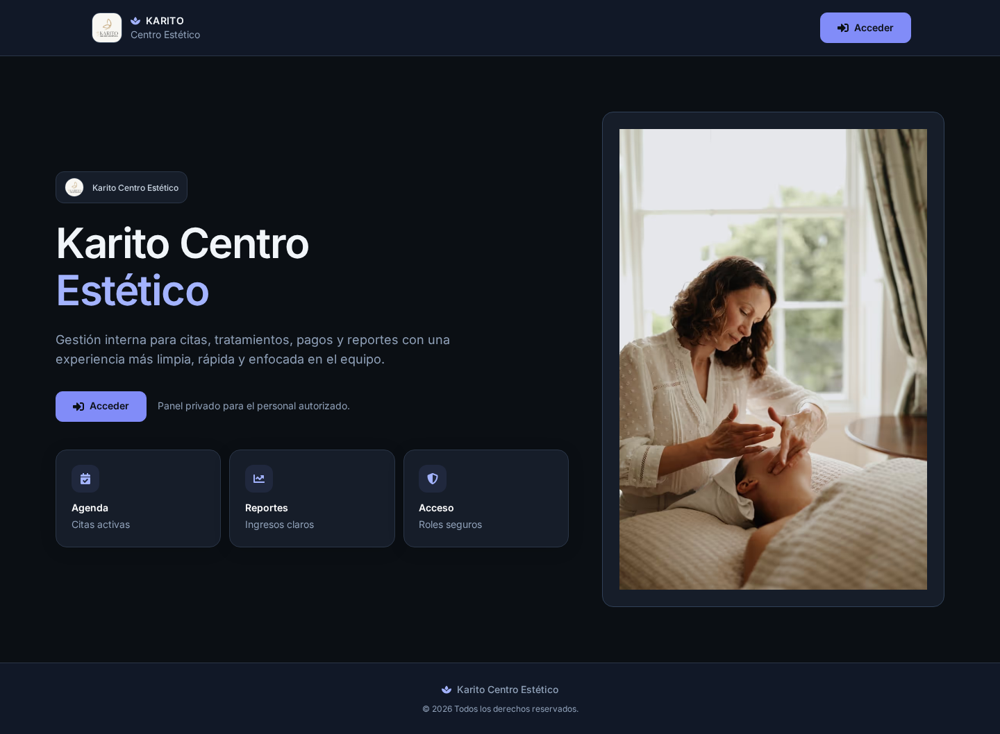
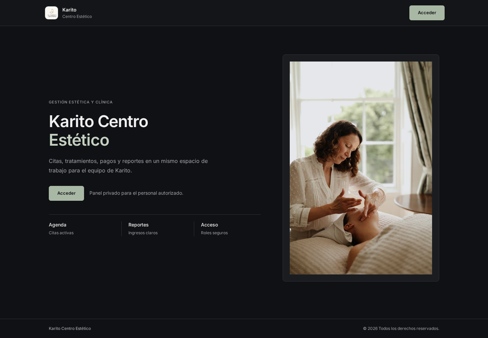
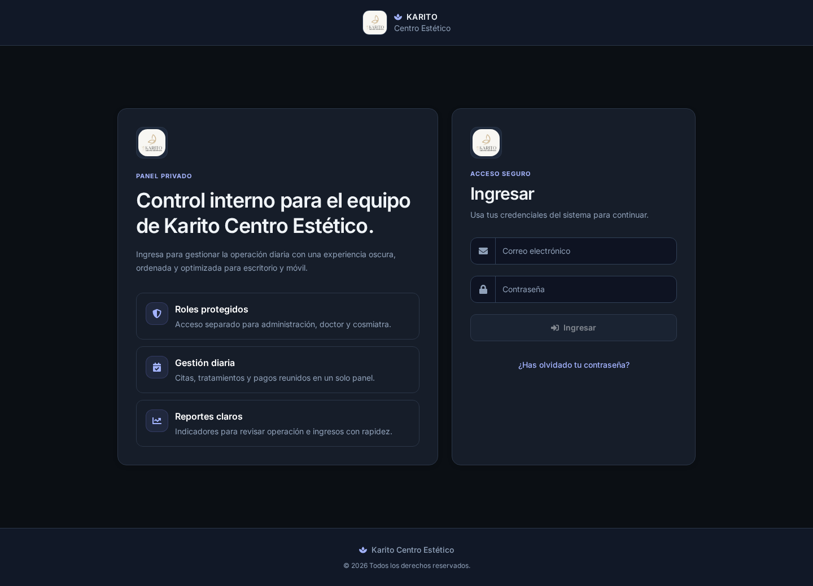
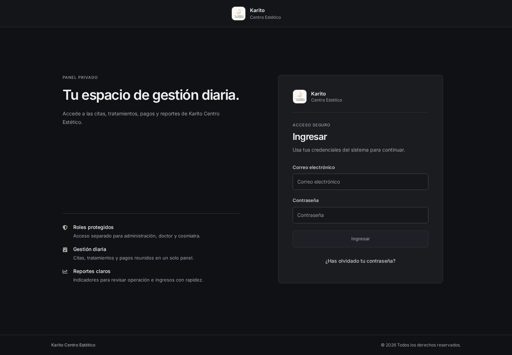
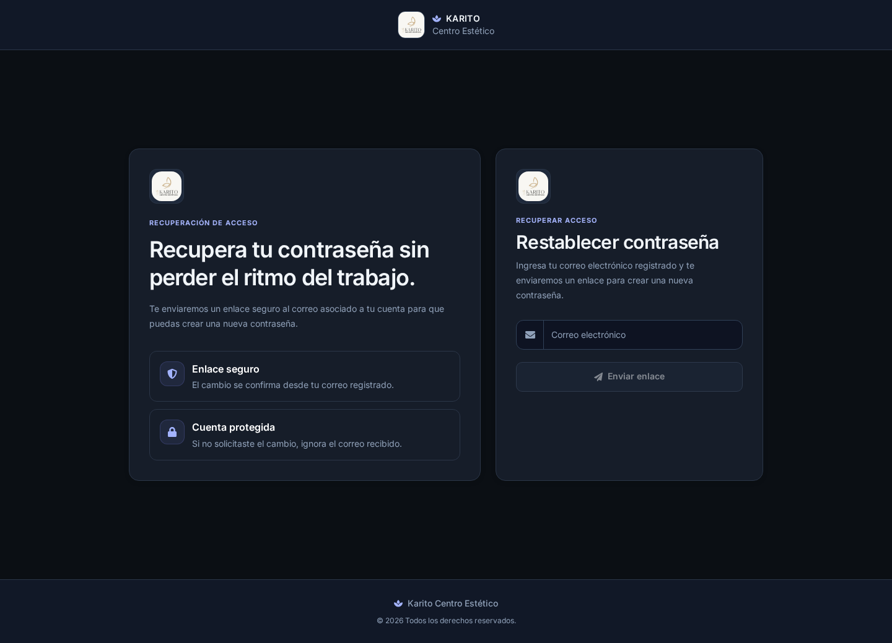
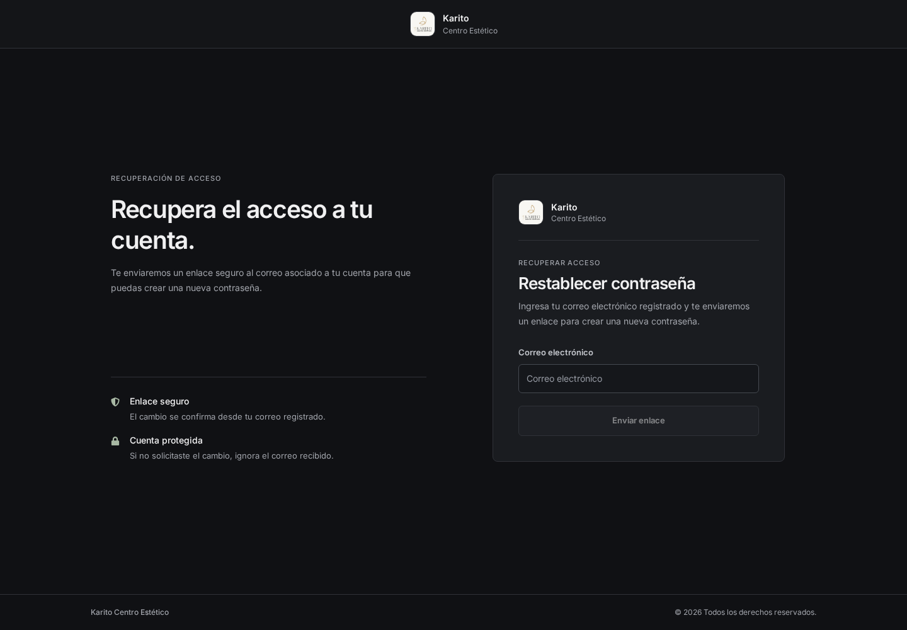

Comparación de las páginas públicas · 29 de octubre de 2026.
Capturas de Chromium a 1440 px. Abre cada imagen para verla en tamaño completo.
Las vistas privadas se revisaron en código y requieren una sesión autorizada para completar su validación visual. Estas capturas no contienen datos de pacientes.
Antes en móvil · Después en móvil · Después en tablet


Antes en móvil · Después en móvil · Después en tablet


Antes en móvil · Después en móvil · Después en tablet


Calendario móvil · Selector móvil · Modal con contenido extenso · Controles y gráficos
Pruebas aisladas con valores sintéticos, sin sesión ni API. No representan pantallas autenticadas.